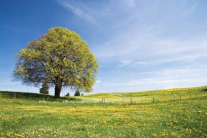
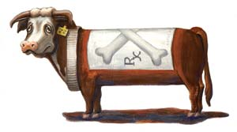

Dear Mother: April/May 2008
Letters from our readers on everything from beef to solar power.
Reader Letters
April/May 2008
We Did Not Pay Him to Say This
The latest Mother Earth News is put together in an extraordinarily palatable format. The layouts flow symmetrically and I found it greatly increased the readability factor for me. There’s such a warm tone to the ads, articles and listings. I’m sure that you and the staff have taken great care and effort to produce these changes. The effort is very much appreciated.
It’s always refreshing to be bolstered in our wheat-grinding, beekeeping, Earthy approach to life and living, but now you have affectionately tussled my hair as you dispense your motherly wisdom - just what a kid like me needed! Thanks Mom and staff!
Scot Gilmore
Mount Vernon, Ohio
Our “kid” most responsible for Mother’s “extraordinarily palatable format” is Art Director Matthew Stallbaumer. - Mother
“I Was Just Blown Away”
What a big improvement the new format of the magazine is! It’s clearer, more actual looking, and the links for the Internet are well-placed and presented.
You are the No. 1 source for us to tackle the problem we are all afraid of and change things, one home and one project at a time. Doing something about global warming seems so overwhelming, but with 8 Easy Projects for Instant Energy Savings, I know now what I have to do and how to prioritize. Another plus is the seasonal recipes. I was just blown away with the quality and right-on-target articles of the February/March 2008 magazine.
Michèle Pique
Leola, Pennsylvania
Great Possibilities
Solar is the Solution was well done and made it easy to compare fuel sources. A change to solar energy cannot come fast enough. If doing the right thing for our Earth and our future can rise above greed, money and tradition, maybe we can see it happen soon. Reading your magazine energized me, increased my eagerness for spring and helped me understand the great possibilities for our future. Thank you for your efforts.
Jennifer Erena
Lexington, Kentucky
And a Complaint?
I have a complaint. This magazine is way too short, and should come out at least once a week. I grab it and tear through it in less than two days, and then I must wait (sniff sniff) for another two months until another one comes out! Every single article is something to read, try or ponder, and the ones on renewable energy should be sent to Washington, D.C. Keep up the good work!
Nancy Gerlach
Garrettsville, Ohio
We have just launched our expanded Web site and now are offering five free e-newsletters as well as a variety of other ways readers can participate in making the site a daily online publication. - Mother
Nonstop Mother
I have been really enjoying your new and improved Web site. Now I have great stuff to read while waiting for the latest edition of Mother Earth News to show up at my library.
Rob Karson
Salt Lake City, Utah
Super Bees … or Silly Mistake?
Keep Bees, Naturally! says that bees make “50 gallons or more of pure, wild honey per hive.” I think you meant to say 50 pounds of honey. As a beekeeper with 25 colonies and a few years of experience, I’ve yet to see a colony produce 50 gallons. Thanks for the wishful thinking though. Fifty gallons of honey equates to roughly 1,000 pounds and would be a world record production for a single colony.
Mike Rininger
Marshall, Virginia
Yep, you’re right. - Mother
Organized Slime
Regarding The Truth About Septic Systems. I was the interim general manager of the Los Osos (Calif.) Community Services District after a recall prompted by the local septic system controversy. It was an experience like no other. The community activists who booted the old board out and that have stood against the state are some of the bravest human beings I have met.
What my experience in Los Osos taught me was that the civil engineering “profession” that I had so much faith in has a very dark side, one that has shaken me and caused me to refocus my life, but also allowed me to see that there are scientists and engineers out there who really get what is going on. It all comes down to money and the accompanying political control that allows for the greed to sink in. Once the greed sinks in, it corrupts. Don’t get me wrong, financial success is good, but not at the cost of corruption that will likely overwhelm even the most well-intentioned.
There is a faction of the engineering community that is composed of large corporations that don’t give a rat’s behind about anything but profit, period. On the other hand, there are many engineers and scientists that have developed effective technology to deal with wastewater. In my opinion, the large engineering and construction corporations see this as a threat to their ability to generate profits. They have been successful in keeping any new and improved, less expensive technology out of this state. The regional and state water quality control boards are in bed with these corporations as well, and for a wide number of reasons - the biggest being the shaping of the regulations that are implemented into law. When we consider the current law exempting agriculture from the level of scrutiny put onto small communities, numerous bodies of water will never see a reduction in the levels of nutrient pollution and nitrogen pollution.
I think the key to changing things is to shine a light on these relationships and change the way that the state and regional boards are run in order to create an environment that allows communities to use new technology, instead of the century-old large mechanical plants being shoved down their throats.
Dan Bleskey
Los Osos, California
Using Humanure
In Country Lore, a reader wrote that the poop in a sawdust composting toilet is “ … not for use in vegetable gardens.” She is repeating an unscientific outlook. This is all explained in The Humanure Handbook. (You can read more about this book in the article Best Books For Wiser Living. - Mother )
The Truth About Septic Systems in the same issue is fantastic.
Jim Stacey
Fayetteville, North Carolina
We agree that human manure can be carefully composted and used safely, but most scientists say that using it on orchards, trees and shrubs is a safer choice than using it on your veggies. - Mother
Yea for the Yaris
After reading your articles in months past, we bought a Toyota Yaris (four-door). Love it! Nothing fancy, no power anything, automatic with air conditioning and a radio. We get 34+ mpg in town and 44+ highway - with the air conditioning on! Whenever I get to a downhill grade, I kick it into neutral and let it coast. It’s 5.3 miles to work, and I can coast about 1.9 miles both ways. Our next vehicle will be a hybrid, and probably a Toyota. Thanks for your articles on the best eco-cars for the money!
Lastly, your article about alternative energy needs was startling! Pressure must be brought to the door of all politicians on all levels.
There is no good reason why we should be lagging behind so terribly. If they don’t move legislation strongly, throw them out and get someone who will - and I mean in one term! Mother, keep up the great work!
Richard Lodwick
Mansfield, Ohio
Selling Eggs and Finding Insurance
Ellen Smith of Pittsford, N.Y., wrote about her inability to find homeowners insurance in Sunny Side Down.
It reminds me of a recent story about a young girl who had a cow and sold milk, cream and butter to several local people. Then the government stepped in and said she couldn’t sell the milk, cream and butter anymore.
To make a long story short, everyone who was buying from her bought shares in the cow. This made them the owners instead of her. They paid her to take care of their cow. She kept the cow, milked it and made butter from the cream. My thoughts are that a similar approach might work for Ellen. She could take care of the chickens that would belong to the people who get eggs. What they paid for eggs would be her pay for taking care of their chickens.
Sharron Krug
Monroe, Michigan
Farmers' Rights
Regarding Ellen Smith recounting how her insurance company told her she had to stop selling eggs or lose her homeowners insurance: The Farm-To-Consumer Legal Defense Fund champions farmers’ rights. This Fund is a much-needed aid and important step in the support of farmers selling from their own premises.
Dorothy LeGeyt
East Hartland, Connecticut
We received several other helpful replies regarding the issue of securing homeowners insurance if you are selling eggs or other farm products on a small scale. You can read these replies at here. - Mother
Secret Ingredient for Better Oatmeal
When I was growing up, every morning my grandmother (who just died at 104 years) made me a bowl of oatmeal. I loved it and could not understand why my friends would say, “Eew! Oatmeal - yuck!” until I tasted what they called oatmeal and learned that, just like the recipes given in 7 Hearty Oatmeal Recipes, they cooked the oats with water. Water? I would no more eat oatmeal with water than I would any other cereal. Truly yucky! My daughter, now grown, still asks for oatmeal for breakfast when she visits, because oatmeal made with milk tastes good. Plus it contains all the nutrition of milk.
Add a cup of skim milk to one-third cup old-fashioned oats and 1 tablespoon raw sunflower seeds in a cereal bowl. Cook in a microwave until boiling, then simmer for 7 to 8 minutes at 30 percent power, stirring occasionally. Add a few tablespoons of wild Maine blueberries and raspberries. Now that’s a delicious breakfast!
Ruta Jordans
Lubec, Maine
The Truth About Beef
A Glimpse of Reality
I can’t thank you enough for What You Need to Know About the Beef You Eat. Many people aren’t aware of the goings-on in factory farms. They need to know, because it’s their money that is keeping these horrible places in business. Your article gave readers a glimpse of the truth. I hope it will inspire readers to purchase their animal products from smaller, local, family-owned farms, at the very least.
Kat Hood
Wilmington, Ohio
Time to Go Organic
I had to write in regarding the article about beef and what cows are eating. I never dreamed so much unwanted junk was in our food! Immediately after reading your article, my husband and I decided there’s no time like the present to start eating more organic. We’re not rich, so we’ll take it in baby steps: We’re starting with organic milk and local, natural eggs, and have plans to buy half a cow from a local farmer (grass-fed, no hormones or antibiotics). Thank you, Mother Earth, for such a thought-provoking article.
Kelley Blair Ostermann
Janesville, Wisconsin
Too Many People for Grass-fed Beef
I agree that the beef industry needs to make some drastic changes in the way it does business. Unfortunately, most of the problem lies with the consumer. That is, to get the beef from field to table as soon as possible, that means the end of grass feeding and the end of dry aging. It would be great to have grass-fed beef, but in reality there isn’t enough land in the United States to pasture all that livestock. Our overpopulation has seen to that. More people means higher demand for beef and less land to raise livestock. The need to feed that population has led to the feedlot.
Here in eastern Montana most ranchers have dropped the use of growth hormones, and are finding that calving earlier in the spring gives the added shipping weight. After they reach the feedlot is when the trouble begins.
Jim Reeves
Glasgow, Montana
The Solar Solution
The Power of Positive Thinking
I wanted to share a few insights I heard from my eighth-grade science students surrounding the global climate change issue and solar technology. After spending the last few weeks studying climate change and exploring alternative energy, I took the class to a Focus the Nation activity with lectures on the topics from local professors and politicians. The students divulged to me that as interesting as everything was, they enjoyed your article Solar is the Solution by Steve Heckeroth more than the lectures. When asked why, several of them stated that all the presenters and audience members were too apocalyptic, whereas Mr. Heckeroth had more of an optimistic view of solar energy and society’s future.
So, as a reminder to all of us out there striving for change, think about your audience. More often than not, we are speaking to the younger generations who espond well to hope, but tune out when exposed to large doses of negativity.
Chris Eaves
Tucson, Arizona
Where There's a Will …
Thank you for writing that Solar is the Solution for our energy needs. Our collective political challenge is to wrest the Department of Energy from the deadly business of making nuclear weapons so that its primary concern can be formulation of a viable energy program. President John Kennedy declared, “We shall place a man on the moon by the end of this decade.” With political will, a nation can accomplish much. What is needed now, so that we don’t become toast from climate change, is a commitment to engage in another industrial revolution to liberate ourselves from a carbon-based economy.
Vic Hummert
Lafayette, Louisiana
|
 ISTOCKPHOTO Reader Jennifer Erena wrote, “Reading your magazine energized me, increased my eagerness for spring and helped me understand the great possibilities for our future.” |
ANGEL FRUIT Chickens make great pets. |
 KERI ROSENBRAUGH Grass-fed cows are healthier than their conventionally raised counterparts and provide healthier beef. |
 MATTHEW T. STALLBAUMER Solar power is by far the most abundant and sustainable energy option. |
|
|